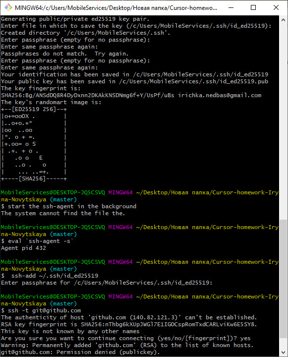
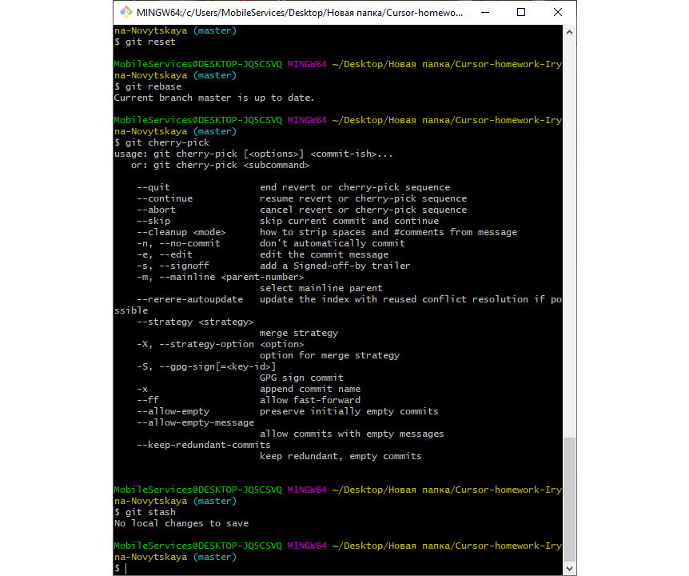

Base
git config --global user.name blabla
Задає імя користувача
git config --global user.email blabal@bla
задає імейл користувача
git init
ініціалізація git-репозиторія
git status
відображає стан робочого каталогу
git add
додає файли робочого каталогу в буфер для подальшого коміту
git commit
додає вміст буфера в репозиторій
git log
відображає усі коміти
git checkout
перехід на іншу гілку
git branch
перегляд наявних гілок, або створення нової
git push
надсилання файлів на віддалений репозиторій
git pull
завантажує зміни з віддаленого репозиторію в локальний каталог
git merge
злиття двох гілок
git clone
створення клону віддаленого репозиторію
.gitignore файл
.gitignore потрібен для приховування файлів та папок від системи контроля версій Git.
Зазвичай приховують конфігураційні файли (особливо з паролями), тимчасові тайли та папки.
Advanced
Підключити github через SSH

Ввести команди:
git revert
створення нового коміту, що скасовує небажані зміни
git reset
спосіб відміни операції, в залежності від аргумента
git rebase
переміщує історію всієї гілки поверх іншої, переписуючи історію проекту новими коммітами
git cherry-pick
бере зміни, що вносяться одним коммітом,
і намагається повторно застосувати їх у вигляді нового комміту в поточній гілці
git stash
дозволяє на час «здати в архів» (або відкласти) зміни, зроблені в робочій копії
